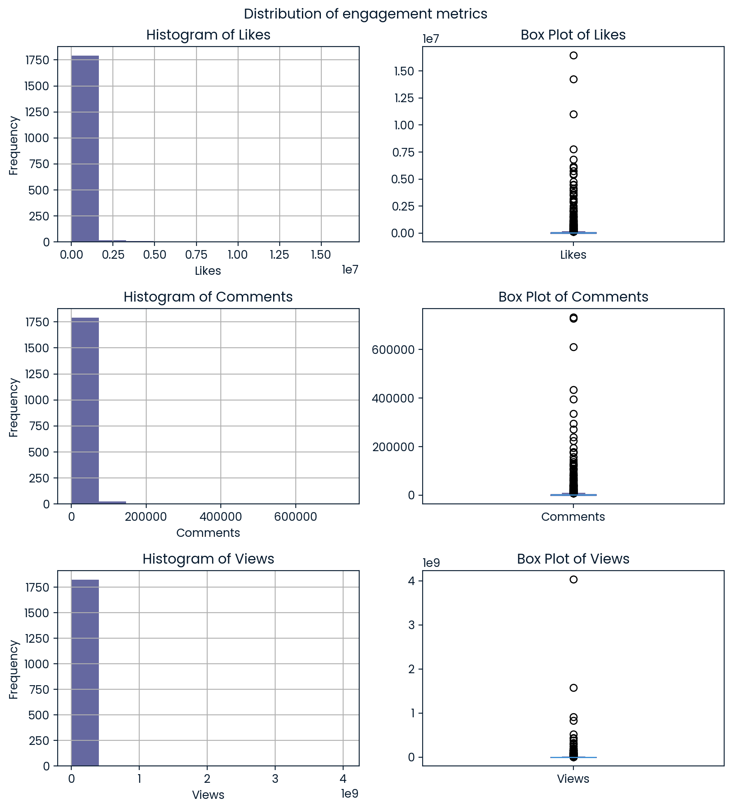
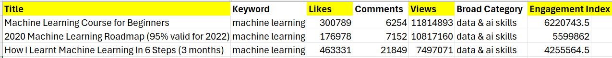

Navigating YouTube Trends for Data Science and AI 🎬
This research project was implemented using Python. The project was one of the winners of the DataCamp Competition! 🏆
Executive Summary
This report provides a comprehensive analysis of video engagement metrics across various categories, with a focus on identifying trends that drive audience interaction. The analysis began with data cleaning steps, including the removal of missing values and duplicates, followed by an exploration of data distributions and the handling of outliers. We observed significant skewness in the distribution of likes, comments, and views, which informed our decision to use median values for subsequent analyses.
The task was to create a ranking model that could help identify trends in various video categories and recommend three best videos to promote an E-learning platform focused on Data & AI skills 🧠 You may find the complete code here.
The datasets Videos Stats and Comments were modified from the original source on Kaggle.
What was done:
- Video Classification: I streamlined the initial 41 video categories into broader, more manageable groups to improve clarity. This regrouping ensured all the videos are classified according to their main topic and decreased the number of groups to 14.
- Creation of Video Engagement Index: I developed an engagement index to assess the popularity of videos by combining likes, comments, and views. This index was instrumental in identifying the most common words in the titles of highly popular videos within each category, revealing content trends that resonate with audiences.
- Sentiment Analysis of Comments: Employing a logistic regression model, I conducted a sentiment analysis of video comments, classifying them into positive, neutral, and negative sentiments. This analysis offered a detailed understanding of viewer reactions and highlighted the emotional impact of different video categories.
- Overall Sentiment Score Calculation: To reflect the influence of audience engagement, I developed an overall sentiment score for each video. This score was derived from the sentiment predictions of individual comments, with greater weight assigned to comments that received more likes, indicating a higher impact on the overall perception of the video.
- Analysis of Common Positive and Negative Words: I identified the most frequently occurring positive and negative words in comments for each video category. This analysis provided insights into the sentiment trends and key themes that are prevalent in viewer feedback across various categories.
- Video Ranking Model Development: A robust ranking model was created using CatBoost Ranker, focusing on a relevance parameter. This parameter was a composite index derived from engagement metrics and the overall sentiment score. The model effectively ranks videos in each category based on their engagement and sentiment scores, ensuring the identification of top-performing content.
What was revealed:
- Engagement Trends: The analysis revealed that tutorials & how to, entertainment, and food videos are the most engaging, with the highest median likes and comments. Videos featuring animals garnered the most views, while media & news videos attracted the highest number of comments.
- Content Themes: Popular video titles often included specific keywords relevant to their category. For instance, "Gordon Ramsay" and "mukbang" were frequent in the food category, while terms like "machine learning" and "Python" were prevalent in data & AI skills videos. Content creators are advised to focus on these trending topics to maximize engagement.
- Sentiment Insights: Positive comments dominated the dataset, especially in categories like tutorials & how to and entertainment. Conversely, media & news videos were predominantly met with negative feedback, likely due to the nature of the content.
- Engagement-Weighted Sentiment Analysis: By weighting comments based on their like counts, it was ensured that comments with higher engagement had a greater impact on the overall video sentiment score. This methodology provided a more accurate reflection of the audience's sentiment towards each video.
- Top Video Recommendations: Our ranking model has identified high-performing videos in the data & AI skills category, highlighting the demand for educational content. Notably, videos centered around machine learning for beginners are particularly popular (which was found during the videos' titles analysis and supported by model's predictions).My final recommendations include two videos, that feature machine learning for beginners and one video featuring AI skills from Google engineer. I recommend emphasizing the creation and promotion of content that is not only relevant but also reflects the latest advancements and trends in the field. Ensuring that content is fresh and aligned with current industry practices will help in maintaining viewer interest and authority in fast-evolving areas like artificial intelligence.
Exploratory Data Analysis of YouTube Trends
After the data cleaning process, which included handling missing data, erroneous data and deletion of duplicates we were left with 7 columns & 1837 rows in Videos Stats dataset and 4 columns & 17876 rows in Comments dataset.
The analysis indicated that the distribution of Likes, Comments, and Views is highly skewed. Given the significant number of outliers, simply removing these rows may be not a good decision, as it would result in the loss of valuable information.
During the analysis, I observed that some of the videos were incorrectly labeled with the keyword. To ensure accurate labeling, I have reclassified these videos. Initially, there were 41 video categories, which was quite extensive. To improve clarity and manageability, I decided to regroup the videos by merging similar categories and reducing the overall number of categories.
For instance, the bed category initially included a variety of videos, ranging from music to entertainment. I consolidated the musical compositions into a music category and created a distinct entertainment category for the entertainment videos.
The number of video categories after regrouping: 14.
The graph below illustrates the median engagement metrics Likes, Views, and Comments across different video categories. The median was chosen over the mean due to the skewness in the data distribution.
As depicted in the graph:
- Highest Likes: Videos from the tutorials & how-to, entertainment, and food categories garner the most likes. These categories seem to resonate well with audiences who appreciate instructional and enjoyable content.
- Highest Comments: Media & news videos receive the most comments. This is expected, as news content typically sparks substantial discussion. Additionally, tutorials & how-to and interview videos also attract significant comment engagement.
- Highest Views: The animals category leads in median views. After all, who can resist watching adorable kitten videos? Sports and tutorials & how-to videos also rank high in viewership.
- Tutorials & how-to videos are particularly noteworthy, excelling in all engagement metrics, highlighting their broad appeal and utility. On the contrary, business & finance videos show the lowest engagement, with fewer likes, views, and comments on average.
To identify which words frequently appear in the titles of popular videos within each category, I conducted an analysis using engagement metrics. My aim was to understand the content trends that drive audience engagement in different video categories. The analysis involved creating an engagement index that incorporates Likes, Comments, and Views from each video. The chosen weights for these metrics are as follows:
- LIKE_WEIGHT: 1.0
- COMMENT_WEIGHT: 2.0
- VIEW_WEIGHT: 0.5
These weights reflect the relative significance of each metric. Comments are given the highest weight because they typically indicate a stronger level of engagement and emotional response compared to likes and views. Likes are considered to represent a moderate level of positive engagement, while views, having the lowest weight, signify the least engagement as they merely indicate that the video was watched.
Below, you will find word clouds showcasing the most common words found in the titles of popular videos across various categories. These visualizations provide insights into the themes and topics that resonate most with audiences in each category.

The word clouds enabled a deeper understanding of the popularity trends within each video category. For example, in the Food category, words like "Gordon", "Ramsay", "food", and "mukbang" frequently appear in the titles of popular videos. This suggests that content related to celebrity chef Gordon Ramsay and eating shows is particularly engaging for this audience. In contrast, popular videos in the Data & AI Skills category often include words such as "machine", "learning", and "science", "course", "python", "beginner". This indicates a strong interest in machine learning and introductory Python courses among viewers, suggesting that content creators in this field might benefit from focusing on videos dedicated to machine learning and computer science, as well as beginner-level Python tutorials to attract and engage their audience effectively.
Sentiment Analysis
In the graph below, you can see the distribution of positive, negative, and neutral comments in the provided dataset. It is evident that the dataset is quite imbalanced, with positive comments making up approximately 62%, negative comments around 12%, and neutral comments about 26% of the total data.

To analyze the sentiment of comments, I developed a machine learning model using logistic regression to calculate the sentiment score for each comment. The final model achieved an accuracy of approximately 0.73 on the test set and 0.75 on the training set. This indicates a well-generalized model with minimal overfitting. The model performs well in predicting positive sentiment comments, which represent about 62% of the dataset. However, it struggles with predicting negative and neutral sentiment comments, indicating a potential area for improvement.

Now we can leverage the comments' predicted sentiment scores from our model to compute an overall sentiment score for each video. Given that some comments garner significantly more likes than others, it’s crucial to assign greater weight to these highly liked comments, as they likely have a more substantial influence on the overall perception of the video.
The approach involves several steps:
- Weighting Sentiment Based on Engagement: I normalize the number of likes each comment receives and then multiply this normalized value by the sentiment score derived from our model. This ensures that comments with more likes contribute more to the overall sentiment score, reflecting their higher engagement and potential impact.
- Aggregating Sentiment for Each Video: I aggregate the weighted sentiment scores for all comments associated with each video. By summing these scores, we get a cumulative sentiment value for each video that accounts for both the sentiment and the engagement level of individual comments.
- Normalizing by Total Engagement: To balance the influence across videos, we divide the aggregated weighted sentiment by the total number of normalized likes. This step ensures that the overall sentiment score reflects the average sentiment in proportion to the engagement level of the comments.
In the graph below, you can observe the distribution of video sentiment across different categories. Across most categories, the trend is relatively consistent, with the majority of videos being classified as positive. This indicates a general positive reception in most content categories, where viewers tend to leave more favorable comments.
An interesting outlier is the media & news category. Here, approximately 90% of the videos are classified as negative, with only a small fraction being neutral or positive. This could suggest that news content often elicits stronger negative reactions, possibly due to the nature of the news being reported or the emotional impact of the content.

In the following section, we aim to identify and visualize the most frequent positive and negative words used in video comments across various categories. Neutral sentiments are excluded to focus on the polar extremes of viewer feedback.
To ensure accurate sentiment analysis, I first preprocess the text of each comment, which included tokenization, lemmatization, stop words removal, and filtering out non-alphabetic characters. Then, using the VADER sentiment analysis tool, I calculate the polarity score for each word. To ensure that only distinctly positive or negative words are considered, I apply polarity thresholds:
- Positive Words: Words with a polarity score above 0.1;
- Negative Words: Words with a polarity score below -0.1.
This filtering helps in excluding words that might not convey strong sentiment, thus focusing on words that clearly reflect positive or negative sentiments.
For each category and sentiment type (positive or negative), I count the frequency of each word. The most frequent words are then visualized using word clouds, which provide an intuitive representation of word importance.
The result is not surprising with 'love', 'good' and 'well' - being the most common positive words and 'wrong', 'problem', 'war' and 'fail' - the most common negative ones.

To delve deeper, I also created bar graphs that display the most frequent positive and negative words for each specific category. These graphs highlight category-specific trends in sentiment expression:
- Positive Words: Common positive words such as “thank,” “good,” “love,” and “great” are prevalent across most categories;
- Negative Words: Words like “bad,” “hard,” and “problem” are frequently found in negative comments across various categories.
Only in one category - media & news negative words are more common than positive ones with words like "war", "lose" and "crime" being the most common.

Development of a Video Ranking Model
To develop a robust video ranking model, I utilized the >CatBoost Ranker, a powerful tool designed for ranking tasks. The model predicts a custom metric called relevance, which combines engagement metrics (likes, views, and comments) with a video sentiment score developed in a previous step.
Data Preprocessing:
- Log Transformation: I applied a logarithmic transformation to the engagement metrics (likes, views, and comments) to normalize the data and reduce the impact of outliers.
- Normalization: Following the log transformation, I normalized these metrics using MinMaxScaler, scaling the data to a range between 0 and 1.
- Relevance Calculation: The relevance score is a weighted sum of the normalized engagement metrics and the video sentiment score. This approach ensures that videos with high engagement and positive sentiment are ranked higher.
Model Training:
I grouped videos by category to ensure that the model generates a separate ranking for each category.
The CatBoost Ranker was trained for 1,000 iterations using the YetiRank loss function, which is specifically optimized for ranking tasks. The model's performance was evaluated using the Normalized Discounted Cumulative Gain (NDCG) metric, achieving an impressive average NDCG score of 0.9997, indicating highly accurate and meaningful rankings.
Strategic Recommendation for E-learning Collaboration
To identify the top videos in the data & AI skills category, I used our model to rank the videos based on relevance scores. Below are the top three videos:
The selected videos have impressive engagement metrics: likes range from 177K to 463K, comments from 6K to 21K, and views from 7M to nearly 12M. These videos are focused on machine learning for beginners, a topic that we identified as highly popular from our video titles analysis (see step 2).
However, our task is to promote an E-Learning platform that emphasizes both Data and AI skills. Notably, none of these top-ranked videos specifically addresses AI skills, a highly relevant and trending topic. Furthermore, the third video, "2020 Machine Learning Roadmap (95% valid for 2022)", although popular, may be outdated for 2024. To ensure relevance and coverage of AI, we will replace this video with the next highest-ranked video (rank 4), titled "Google Engineer on His Sentient AI Claim". This video is well-received with 13K comments and has a positive sentiment, aligning well with our focus on contemporary AI topics.

You may check the complete code following the link below.